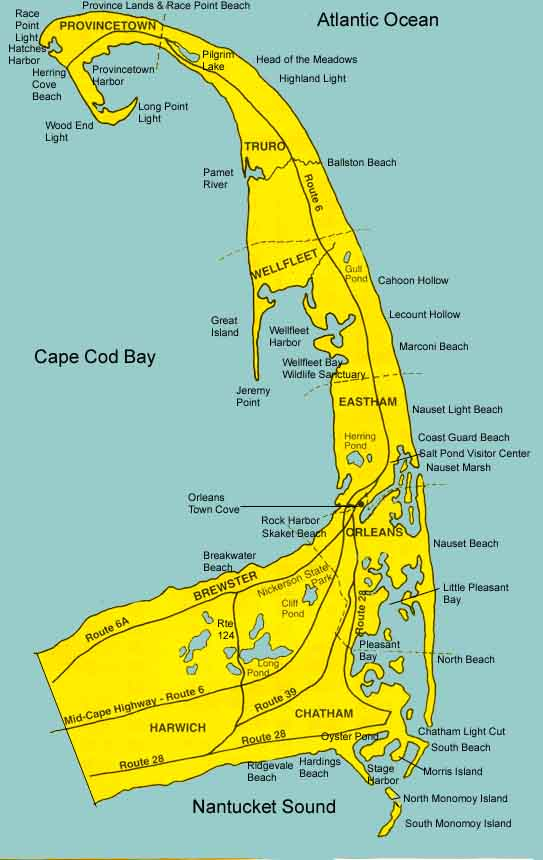

Anne's Cape Cod Favorites
| |
Maps and Special PlacesGetting Maps recommends a good set of paper maps. Special Bays and Marshes describes Pleasant Bay andNauset Marsh. Map of Outer Cape shows many of the places highlighted in these pages.
The best street maps of the Cape are published by the Butterworth Company of Cape Cod. The maps fold to 4 by 9 inches to fit in your pocket or bicycle basket. One map covers Brewster, Harwich, Chatham, Orleans and another covers Provincetown, Truro, Wellfleet, Eastham. If you don't find them in stores, call the company and order some at 508-790-1111. Nice maps of the outer Cape and various bicyle trails are available at the National Seashore Visitor Centers. Many real estate offices will give you maps. The booklets and brochures you can pick up at town information centers have good maps too.
Pleasant BayPleasant Bay extends from Orleans to Chatham and covers about 9000 acres. The barrier beach that extends from Nauset to Chatham Harbor protects Pleasant Bay. Many of the waters are only a shallow marsh at low tide, and the tides follow their own schedule. The water is much warmer than the Atlantic. Toward the break in the beach in Chatham Harbor, the currents can be very strong. In the upper reaches of Little Pleasant Bay are many narrow inlets, often referred to as "rivers", and sheltered "ponds." The Orleans and Chatham pages describe some ways to see and explore Pleasant Bay. Nauset MarshNauset Marsh covers a large area between Orleans and Eastham. Orleans Town Cove is at the inner reaches of the marsh to the south. The National Seashore Salt Pond Visitor Center is at the inner reaches further north in Eastham. The marsh is protected by the northward extension of Orleans's Nauset Beach and the southward extensionof Eastham's Coast Guard Beach. Access to the Atlantic is only through one narrow channel between the barrier beaches. The Orleans and Eastham pages describe some ways to see and explore Nauset Marsh.
 Intro | Tours | Maps | Restaurants Walking | Bicycling | Boating | Sightseeing | Beaches Brewster | Chatham | Orleans | Eastham | Wellfleet | Truro | Provincetown [ Anne's Home Page ] |